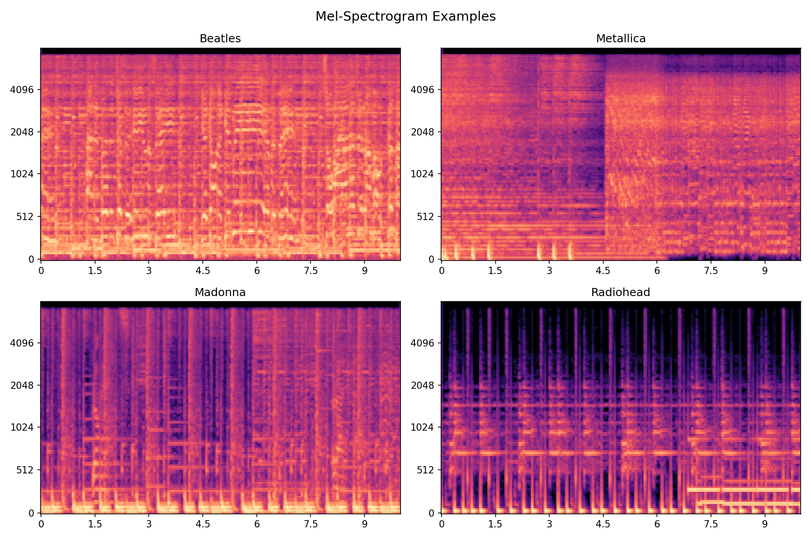
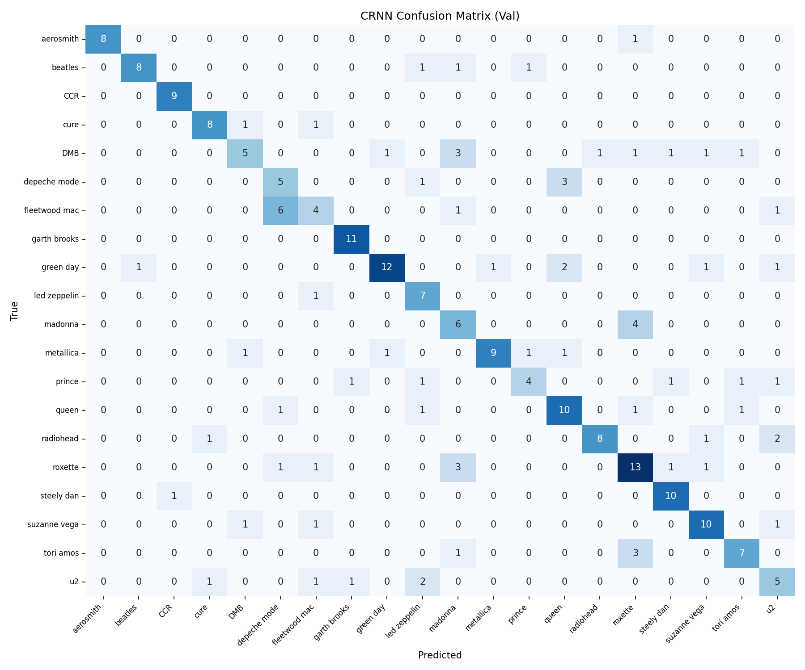
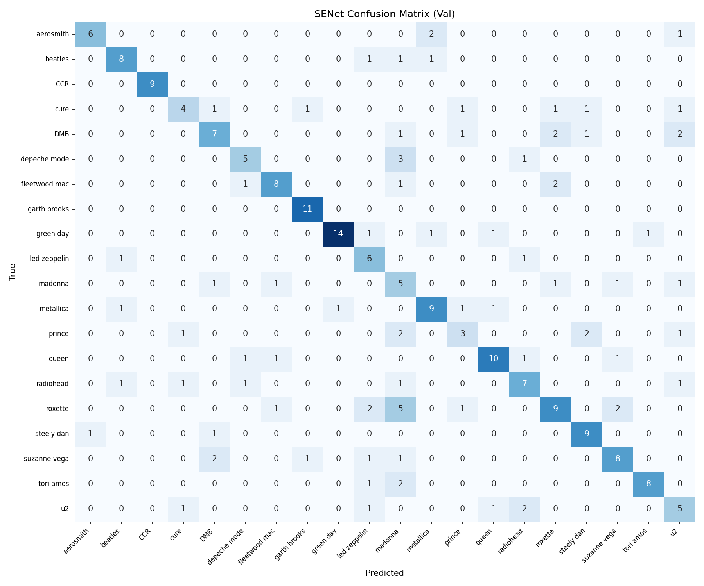
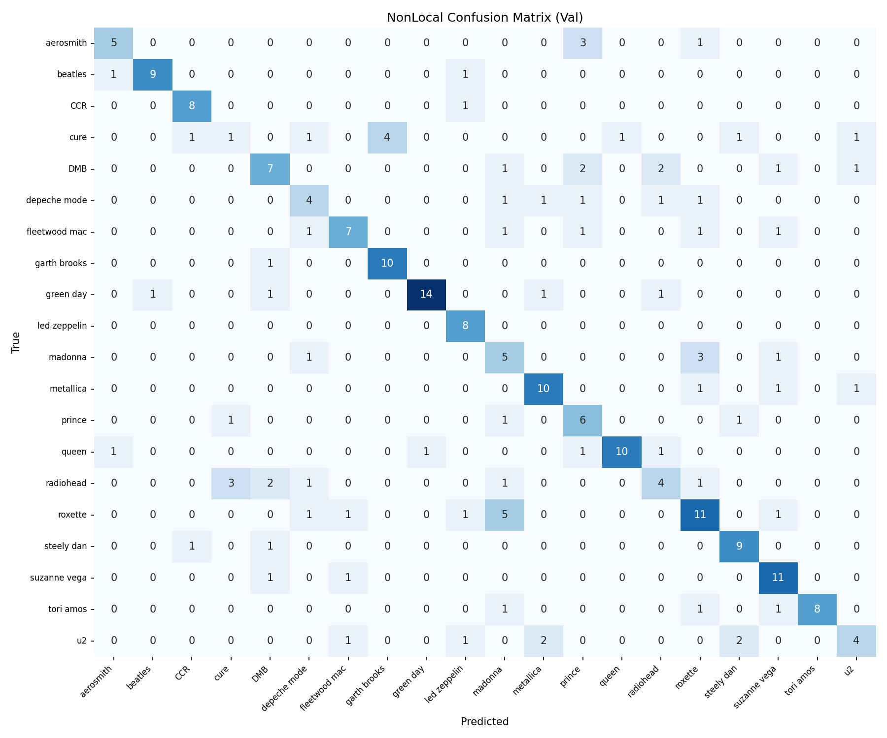

Identifying 20 musical artists from raw audio using
traditional ML and deep learning on mel-spectrograms.
Given a full-length audio track, predict which of 20 artists performed it. The dataset contains 120 albums from 20 artists at 16kHz mono MP3 format. Splits are album-level to prevent leakage.
20 artists · 120 albums · 1413 tracks. Album-level split: 4 train / 1 val / 1 test per artist.
Full song length. Sample rate 16,000 Hz, single channel. Total dataset size: 1.28 GB.
Score = Top-1 + 0.5 × Top-3. Confusion matrix reported for all models on validation set.

A classical pipeline: extract hand-crafted audio features with Librosa, standardize, and classify with SVM.
Three 5-second segments are extracted per track (start, middle, end). For each segment, the following features are computed then averaged across segments:
Features are standardized with StandardScaler (zero mean, unit variance) before training.
| Split | Top-1 Accuracy | Top-3 Accuracy |
|---|---|---|
| Train | 1.000 | 1.000 |
| Validation | 0.312 | 0.594 |
The SVM memorizes training tracks but struggles to generalize across albums — expected given the small dataset size (~950 training tracks).
Three architectures are trained from scratch on mel-spectrograms, each implementing ideas from recent singer identification literature.
CNN encoder + Bidirectional GRU + Attention pooling. Models both local spectral features and long-term temporal patterns.
ResNet backbone with Squeeze-and-Excitation blocks. Recalibrates channel-wise features, focusing on discriminative frequency bands per artist.
CNN with Non-Local blocks capturing long-range time-frequency dependencies via self-attention at multiple network layers.
Reference: Nasrullah & Tan, "Musical artist classification with convolutional recurrent neural networks," IJCNN 2019.
Reference: "Positions, channels, and layers fully generalized non-local network for singer identification," AAAI 2021.
| Config | CRNN | SE-ResNet | Non-Local |
|---|---|---|---|
| Optimizer | AdamW | AdamW | AdamW |
| LR | 3e-4 | 3e-4 | 3e-4 |
| Scheduler | CosineAnnealing | OneCycleLR | CosineAnnealing |
| Epochs | 150 | 120 | 120 |
| Batch size | 32 | 64 | 32 |
| Segs/track/epoch | 3 | 5 | 5 |
| Segment length | 10s | 10s | 10s |
| Label smoothing | 0.1 | 0.1 | 0.1 |
At inference, each track is split into 10 random segments. Softmax probabilities are averaged before selecting top-3 predictions. This reduces single-segment variance and significantly boosts accuracy.
| Model | Top-1 | Top-3 | Score (T1 + 0.5·T3) |
|---|---|---|---|
| SVM | 0.312 | 0.594 | 0.609 |
| CRNN (+ TTA) | 0.769 | 0.919 | 1.228 |
| SE-ResNet (+ TTA) | 0.761 | 0.923 | 1.222 |
| Non-Local Net (+ TTA) | 0.761 | 0.897 | 1.209 |
| ★ Ensemble (1, 2, 1) | 0.825 | 0.949 | 1.299 |



Weighted averaging of softmax probabilities (post-TTA) from all three models. Weights determined by grid search on validation set.
CRNN single-segment: 0.65 → TTA ×10: 0.77. Averaging over random crops dramatically reduces prediction variance.
Long-range attention across time-frequency captures singer-specific patterns better than purely local convolutions.
Combining complementary architectures (temporal vs channel vs non-local) yields consistent improvement across all metrics.
[1] Nasrullah & Tan, "Musical artist classification with convolutional recurrent neural networks," IJCNN 2019.
[2] Hsieh et al., "Addressing the confounds of accompaniments in singer identification," ICASSP 2020.
[3] "Positions, channels, and layers fully generalized non-local network for singer identification," AAAI 2021.
[4] Hu et al., "Squeeze-and-Excitation Networks," CVPR 2018.
[5] Wang et al., "Non-local Neural Networks," CVPR 2018.
[6] Park et al., "SpecAugment: A Simple Data Augmentation Method for ASR," Interspeech 2019.